KyriosPic est un studio de photographie basé à Sarh, spécialisé en portrait, événementiel et communication visuelle — porté par la maîtrise de la lumière naturelle et une retouche signature.
Cérémonies traditionnelles et civiles — les instants forts, les détails et l'émotion.
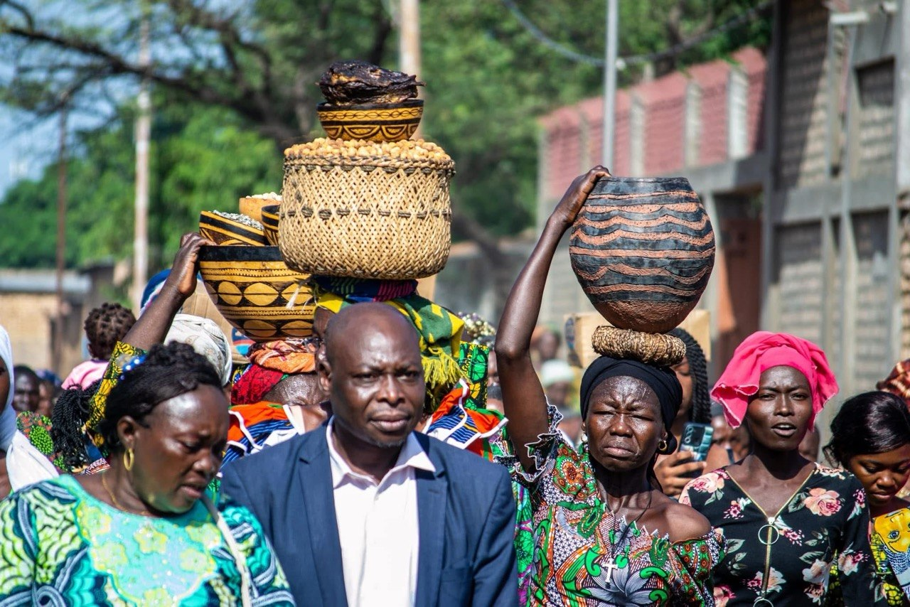
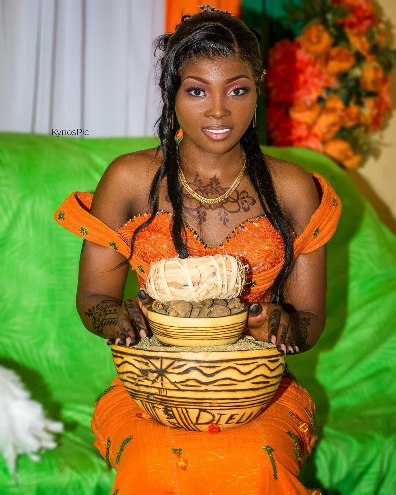
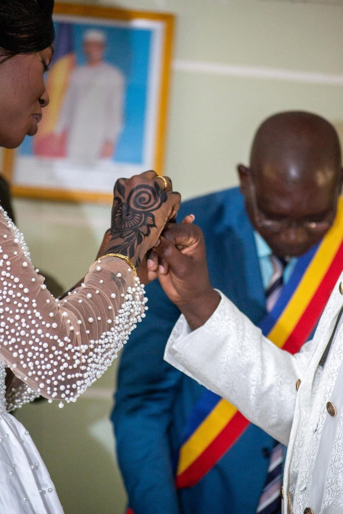
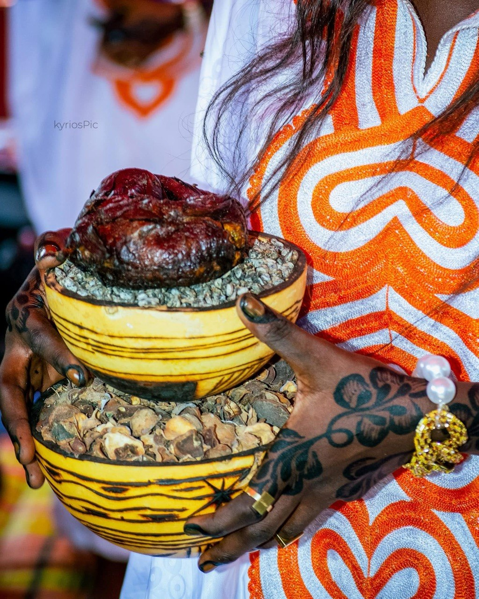
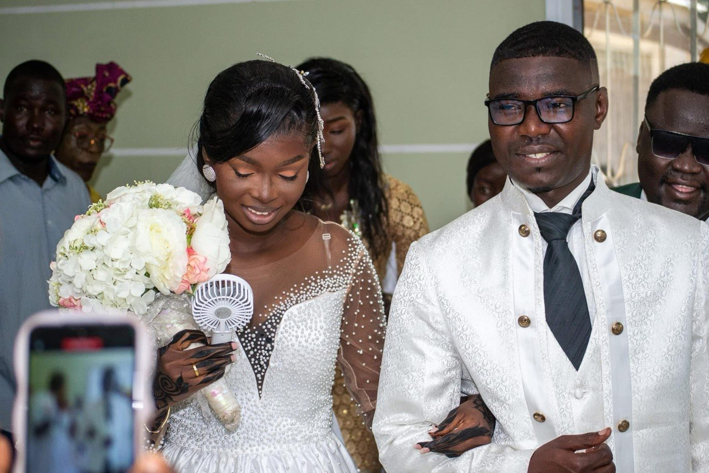
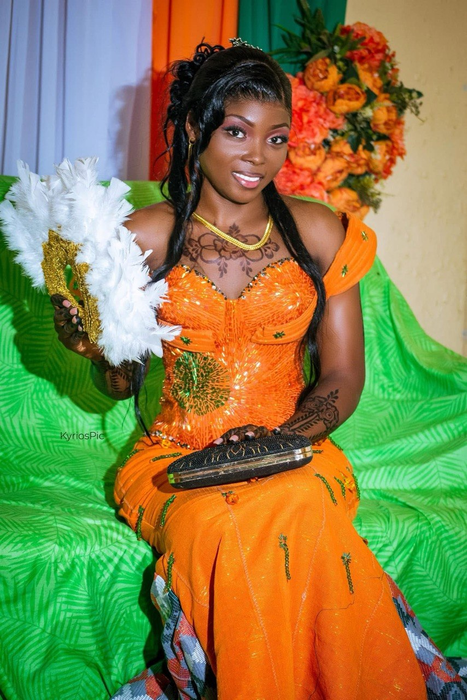
L'énergie live, les artistes et le public — capturés dans l'instant.
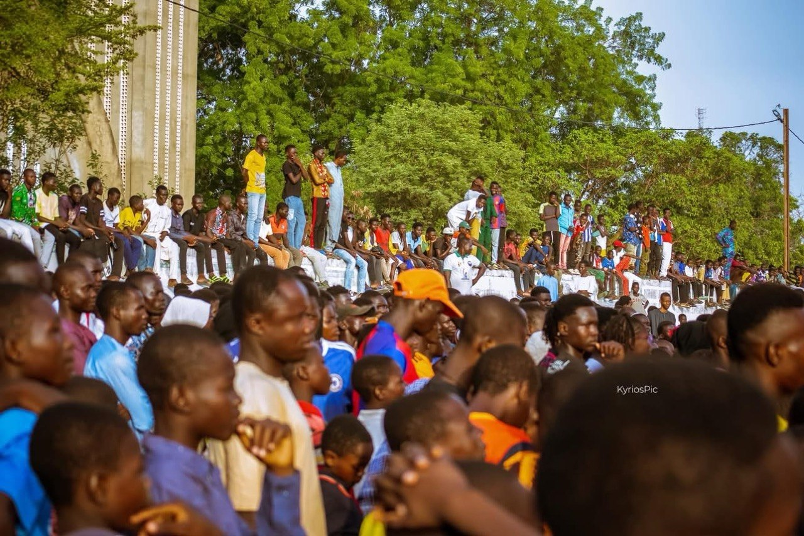
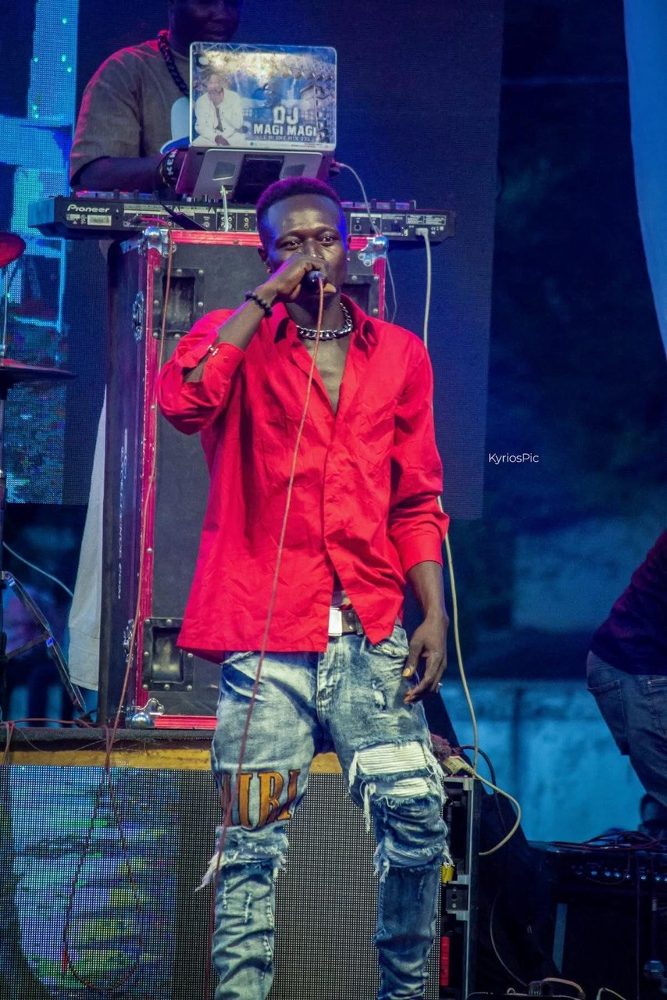
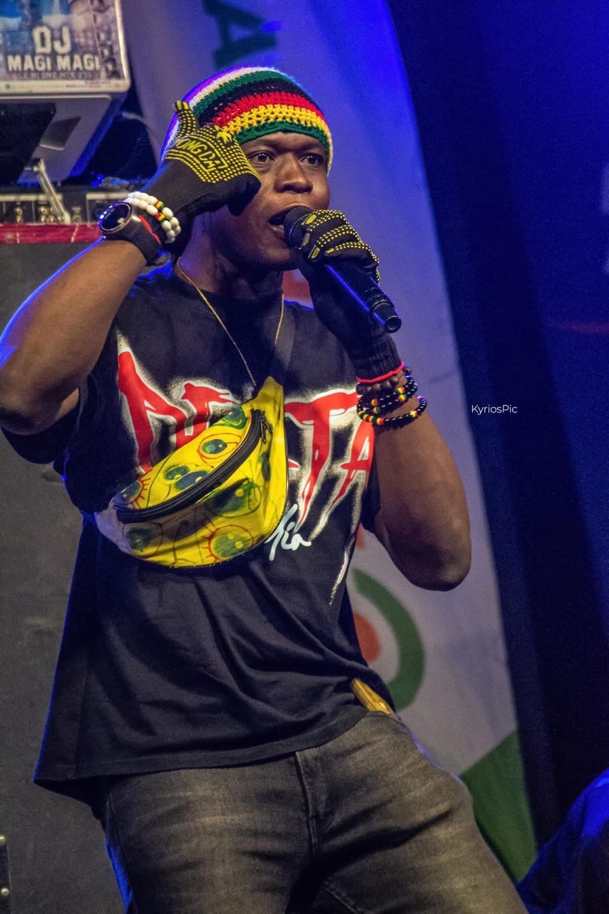
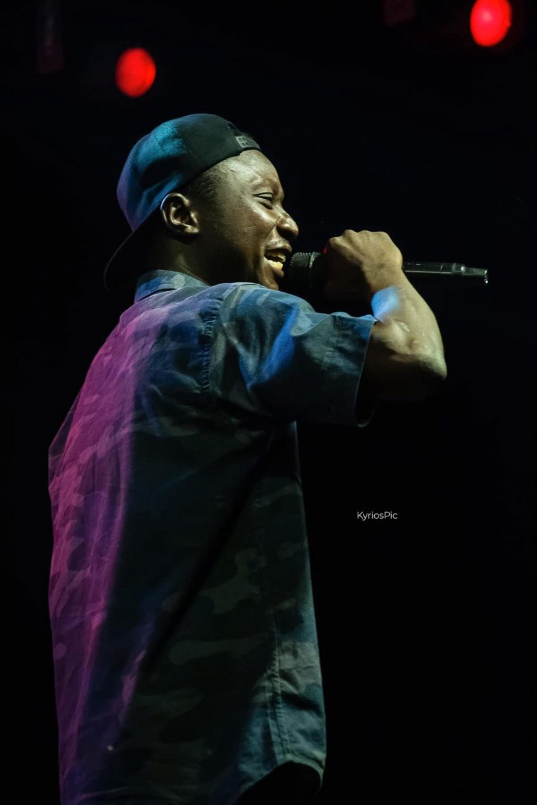
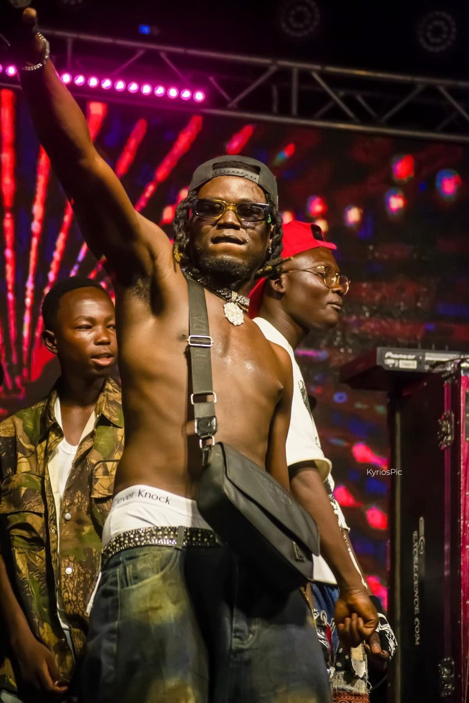
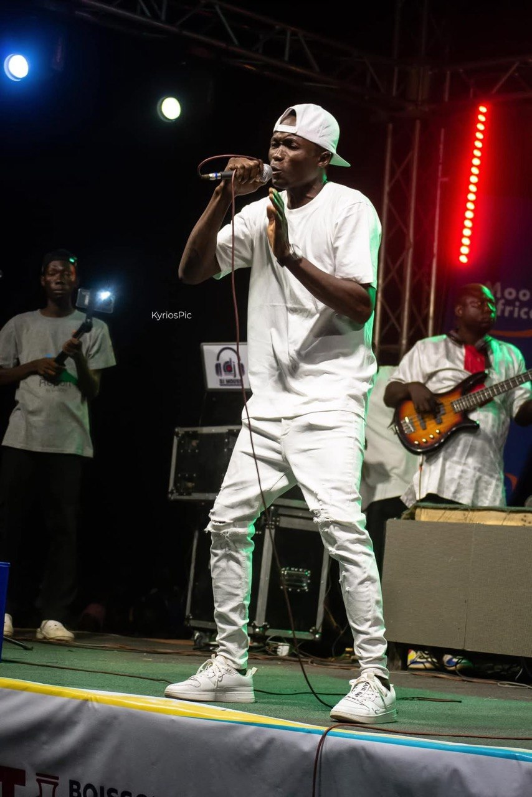
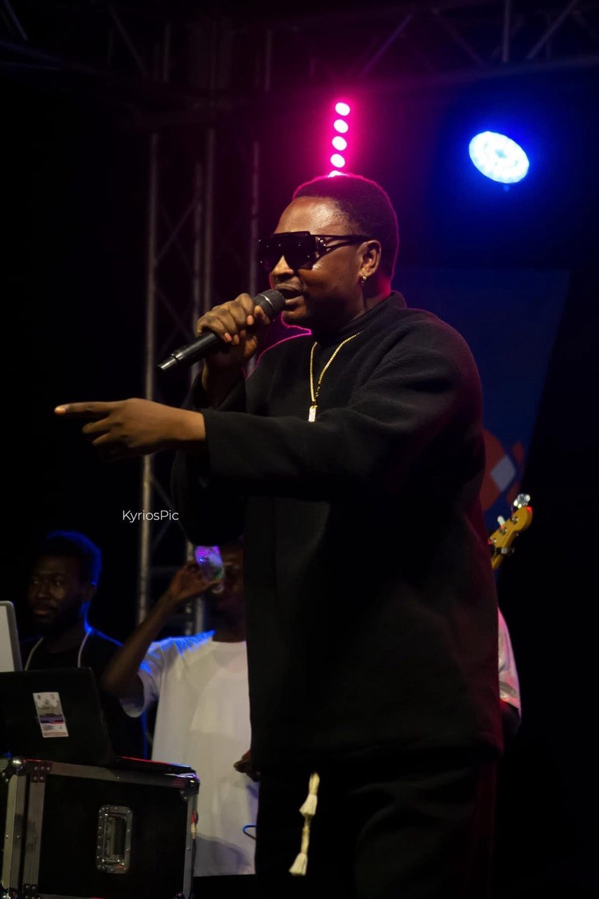
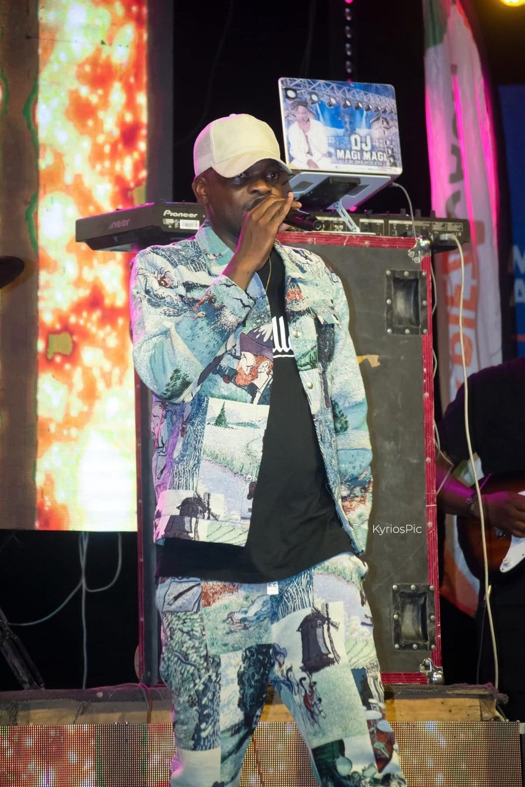
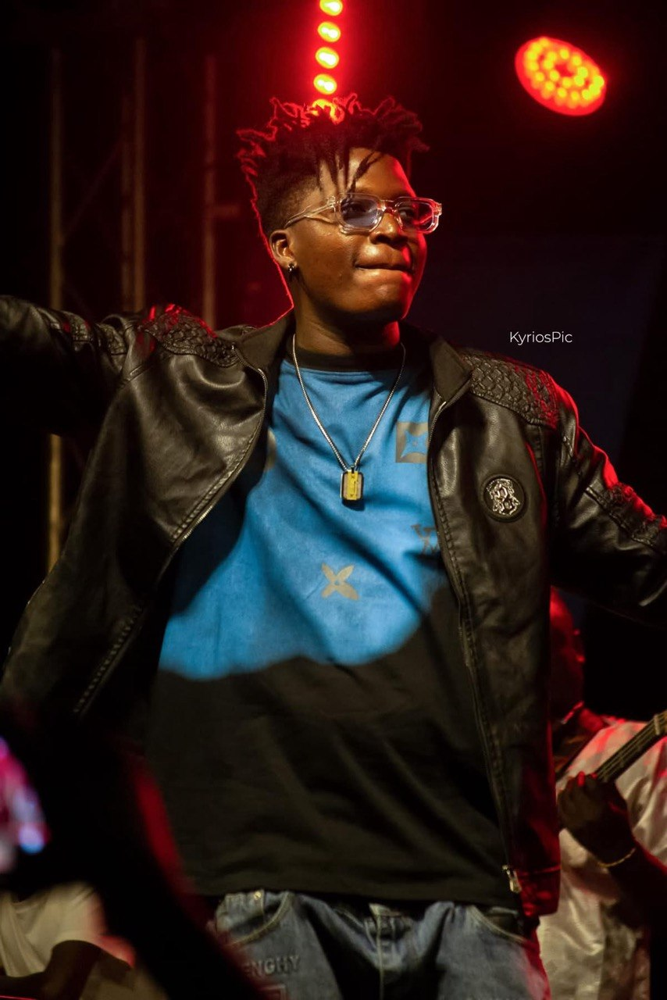
Portraits d’équipe, événements officiels et communication visuelle pour entreprises, institutions et ONG.

La vie quotidienne, les terrains, les rues de Sarh et du Moyen-Chari.


Je m’appelle Yonatan, photographe basé à Sarh. Je travaille la lumière naturelle, le regard et l’émotion pour créer des images justes — que ce soit pour un portrait, un mariage, un concert ou une entreprise.
Chaque séance est pensée avec précision : lecture de la lumière, composition soignée, et une retouche signature qui respecte le réel sans l’alourdir. Mon objectif est simple : des images qui vous ressemblent et qui marquent.
KyriosPic accompagne particuliers, artistes, institutions et entreprises du Moyen-Chari et au-delà.